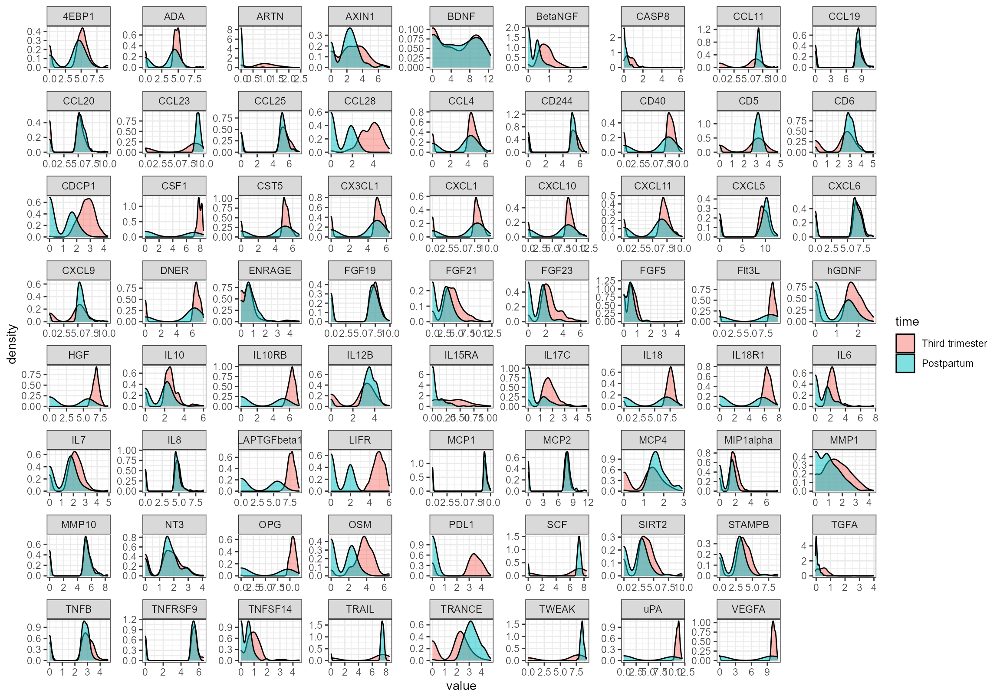
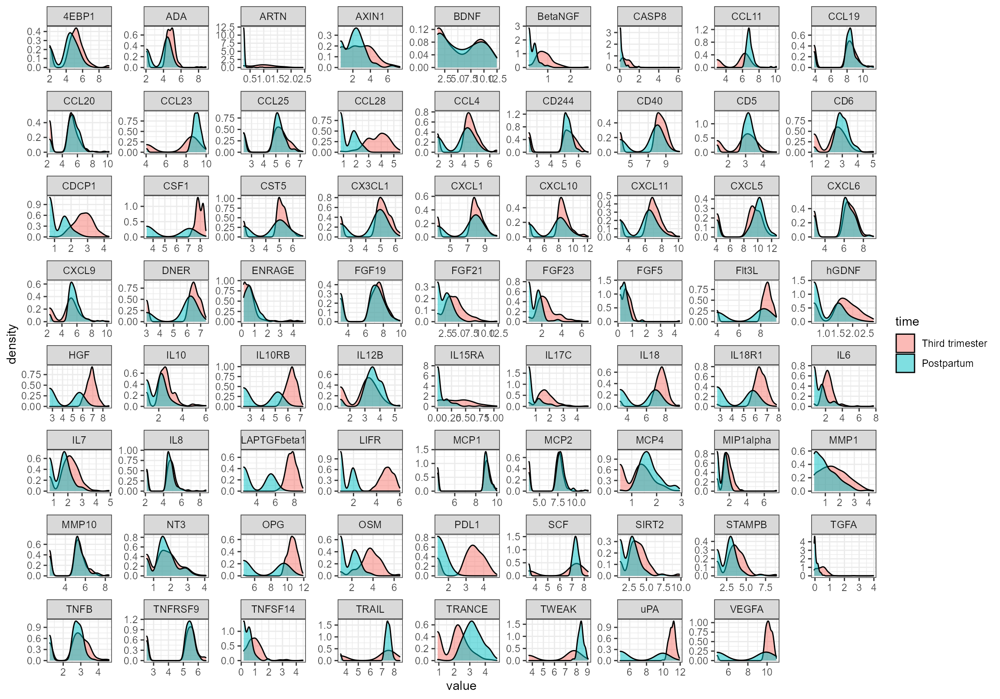
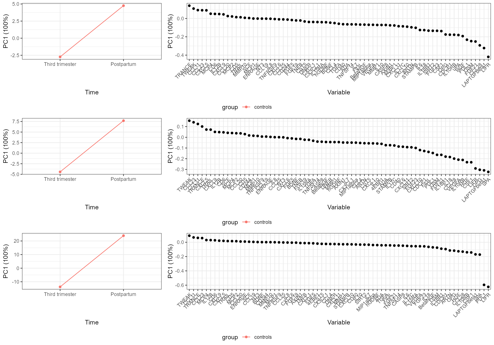

Limit of Detection
Anders H. Jarmund
2021-09-12
Source:vignettes/limitofdetection.Rmd
limitofdetection.RmdLimit of Detection
In this vignette we will look at ways of dealing with limit of detection. We will use another pregnancy dataset with late third trimester and post-partum samples (Bränn et al. 2019a, 2019b). Some of them are paired, but most are not. We can look at the paired observations (22 women):
ggplot(subset(df, mixed_model > 2), aes(time, value, group = ID)) + geom_point() + geom_line() + facet_wrap(~variable, scales = 'free') + theme_bw()
#> Warning: Removed 78 rows containing missing values (geom_point).
Originally, the dataset contains only a few missing data points, so we will introduce some more by censoring all values below the 20th percentile by variable;
df0 <- na.omit(df) # keep original data but remove missing values
lowerLimit <- aggregate(data = df, value~variable, FUN = function(x){quantile(x, probs = .2, na.rm = TRUE)})
for(i in unique(df$variable)){
df$value[df$value < lowerLimit$value[lowerLimit$variable == i] & df$variable == i] <- NA
}
df$value[is.na(df$value)] <- 0Note the peak about zero where we have put the censored measurements:
ggplot(df, aes(value, fill = time)) +
geom_density(alpha = .5) +
facet_wrap(~variable, scales = 'free') +
theme_bw()
Replacement
A common yet limited way of dealing with the censored observations is replacing them with half the lower limit of detection.
df_half <- df
for(i in unique(df_half$variable)){
df_half$value[df_half$value == 0 & df_half$variable == i] <- lowerLimit$value[lowerLimit$variable == i]/2
}We have now replaced the zero values, but you can still see that we have a peak corresponding to the lower values.
ggplot(df_half, aes(value, fill = time)) +
geom_density(alpha = .5) +
facet_wrap(~variable, scales = 'free') +
theme_bw()
scaleFun <- function(x){return(x)}
mod.orig <- ALASCA(df0,
value ~ time + (1|ID),
separateTimeAndGroup = FALSE,
useRfast = TRUE,
scaleFun = scaleFun,
method = "LMM")
#>
#>
#> ====== ALASCA ======
#>
#> v.0.0.0.96 (2021-09-11)
#>
#> Will use Rfast!
#> Using group for stratification.
#> Scaling data with custom function...
#> Calculating LMM coefficients...
#> Finished calculating regression coefficients!
#> Calculating effect matrix
#> Finished calculating effect matrix!
mod.half <- ALASCA(df_half,
value ~ time + (1|ID),
separateTimeAndGroup = FALSE,
useRfast = TRUE,
scaleFun = scaleFun,
method = "LMM")
#>
#>
#> ====== ALASCA ======
#>
#> v.0.0.0.96 (2021-09-11)
#>
#> Will use Rfast!
#> Using group for stratification.
#> Scaling data with custom function...
#> Calculating LMM coefficients...
#> Finished calculating regression coefficients!
#> Calculating effect matrix
#> Finished calculating effect matrix!
mod.KMM <- ALASCA(df,
value ~ time,
separateTimeAndGroup = FALSE,
useRfast = FALSE,
lowerLimit = lowerLimit,
scaleFun = scaleFun,
method = "KMM")
#>
#>
#> ====== ALASCA ======
#>
#> v.0.0.0.96 (2021-09-11)
#>
#> Using group for stratification.
#> Scaling data with custom function...
#> Calculating KMM coefficients...
#> Warning in coxfitfun(x, y, strata = strata, offset = offset, init = ifixed, :
#> Loglik converged before variable 1 ; coefficient may be infinite.
#> Warning in coxfitfun(x, y, strata = strata, offset = offset, init = ifixed, :
#> Loglik converged before variable 1 ; coefficient may be infinite.
#> Finished calculating regression coefficients!
#> Calculating effect matrix
#> Finished calculating effect matrix!We note that PDL1 and LIFR was excluded by the authors due to the large number of undetectable measurements (Bränn et al. 2019b). The Cox regression seems to overestimate the decrease of these variables (or - the ordinary ASCA is underestimating the decrease)
ggarrange(
plot(flipIt(mod.orig)),
plot(flipIt(mod.half)),
plot(flipIt(mod.KMM)),
nrow = 3, ncol = 1
)